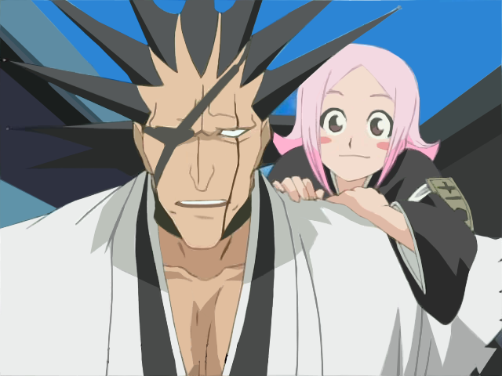

|  | Zaraki KenpachiCapitão da Bleach. Sozinho desde a infancia fui criado lutando com os mais poderosos da sou society encontrado pelaAntiga Capitã da Decima Primeira DivisãoUnohana e treinado ate me torna o atual capitão. |
| 2010-2023 | Capitão da Decima Prtimeira Divisão |
| 2010 | Capitão Mais Forte Sem Bankai |
| Força | ⭐⭐⭐⭐⭐ | Carisma | ⭐ |
| Reiatsu | ⭐⭐⭐⭐⭐ | Tranquilidade | ⭐⭐ |